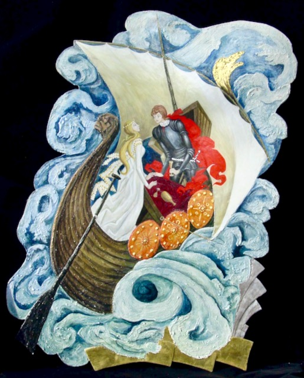
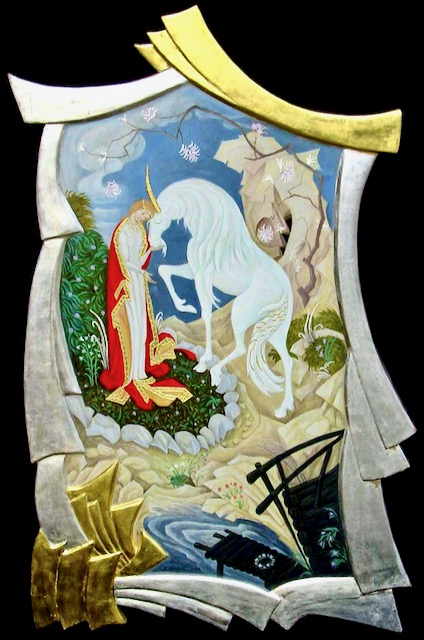
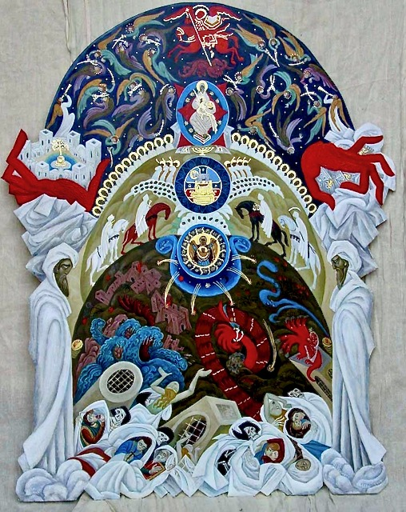
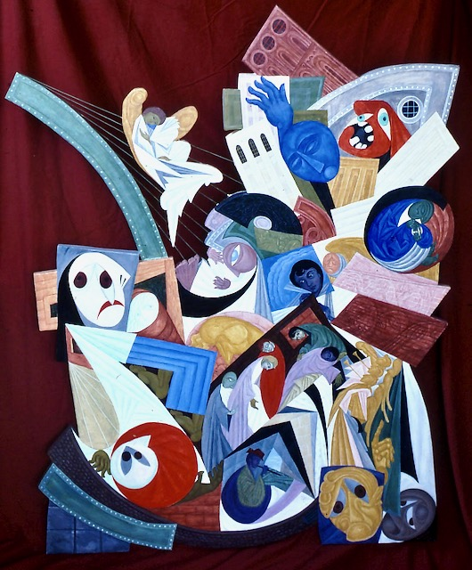
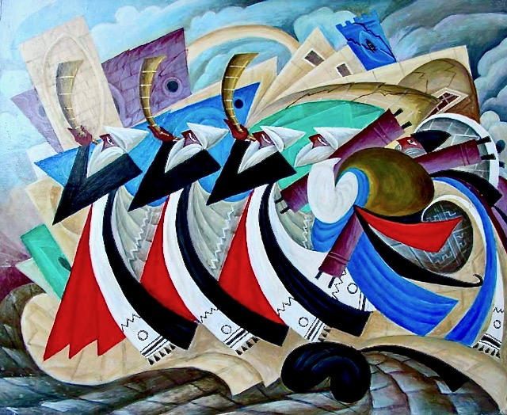
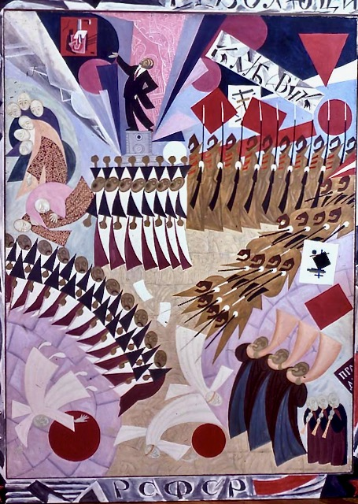
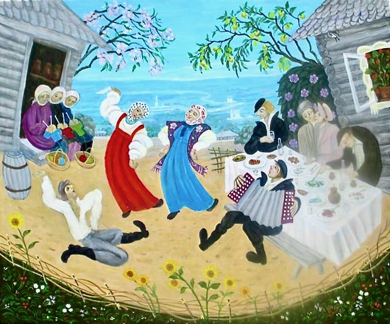
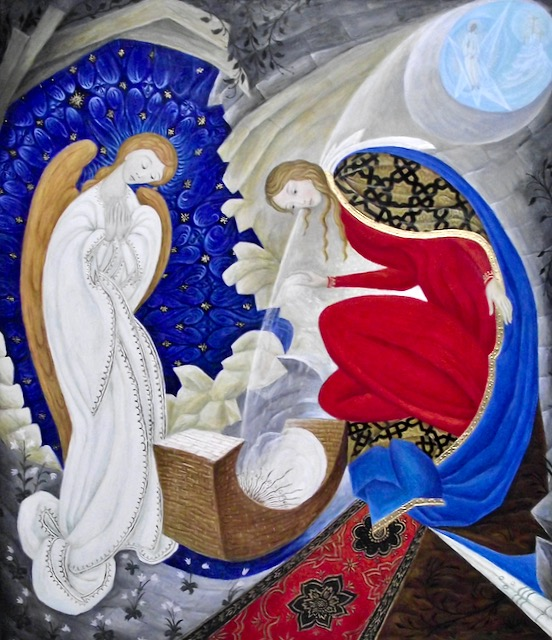

Experience the contemporary paintings of Russian-American artist and designer Alexander Gassel - blending the avant-garde with traditional Russian iconography and combining ancient symbols with contemporary subjects, Gassel creates surrealist works that reflect his cultural heritage alongside his experience of life in America.
Portfolio
Alexander Gassel uses ancient techniques employed in the creation of icon paintings. He paints with egg yolk tempera, making his own color pigments by grinding natural stones and minerals, such as malachite, cinnabar, or lapis into powder, which he then mixes with egg yolk. The artist often applies gold or silver leaf on the paintings. Blending the avant-garde with traditional Russian iconography, combining ancient symbols with contemporary subjects, Gassel creates surrealist works that reflect his cultural heritage alongside his experience of life in America.
Full Story
-
Mixed MediaBack to PortfolioMoses and Egyptian plagues
48”x38”Madonna with St. Francis
28”x40”Rest on the way to Egypt
x26”St. George fighting the dragon
32”x24”Tristan and Isolde

26”x36”Vine of love
36”x28”Hagen fighting the griffins

52”x38”Virgin and unicorn
44”x28”Swan lake
38”x20”Earth and Paradise

48”x38”Book of Revelation
48”x38”Way to the Calvary
48”x38”Medieval parade

32”x52”Angel on the bridge
48”x40”Doors to the sky
36”x24”Lost town
50”x38”Life what is it
48”x48”Mother’s thoughts
48”x48” -
Philosophy and HistoryBack to PortfolioSolitude
12”x10”Exodus #2
48”x68”Back to the Wall
24”x20”Praying Jews #2
20”x16”Praying Jews
20”x16”Ghetto tales
24”x20”Trumpets of Jericho #2

20”x24”Trumpets of Jericho
24”x20”Holocaust
48”x72”Exodus

26”x52”Revolution
52”x42”Dictatorship
42”x38”Air strike
42”x42”
Reincarnation
48”x68”Tempest
36”x46”Battle between angels of day and night
48”x68”Crusade
36”x52”
Invasion
48”x68”Truth what is it
72”x52”Four horsemen
48”x68”The last battle
56”x84” -
Romantic CompositionsBack to PortfolioJessie
20”x16”Kiss
24”x20”Good night
20”x16”Dream
20”x24”Passion
24”x18”Romeo and Juliet
16”x 12”Magic builders
20”x24”
Deep thoughts
24”x20”Persian carpet
20”x16”Golden mountains
24”x18”Dance in the sky
24”x20”Dance in gold
30”x21”Judith
20”x16”Forbidden fruit
20”x16”First flowers
24”x20”Running waves
20”x16”Eve
46”x32”Speaking to mom
46”x38”Sea nymph
36”x24”Flowers field
36”x46”Lady swan
36”x46” -
City and Country LifeBack to PortfolioReturning of the herd
20”x16”Lonely fisherman

28”x24”Country dance
20”x24”Wedding in the old country
24”x20”Old village in the summer
32”x46”Old village in the winter
32”x46”Children's games
36”x46”Old village
28”x24”Old Russian village
48”x68”Fast food
28”x24”North shore promenade
28”x22”Boston Haymarket
48”x68”Manhattan
48”x68” -
Religious PaintingsBack to PortfolioBook “Pravoslavnaya Ikona” (Russian Orthodox Icon)
Book “The Icon on Earth”
Two angels
St. Leo cathedral
St. Andrew church
St. Andrew church
St. Leo cathedral
St. Leo cathedral confession room
Earth, hell and paradise
Orthodox chapel
Apocalypse
41”x26”Madonna with the Pope
48”x24”Descent from the Cross
48”x48”Baptism
52”x42”Way to the Calvary #2
52”x42”Sky

56”x 44”Nativity #2
42”x36”Nativity
52”x46” -
DrawingsBack to Portfolio
Praying Jews
Back to the Wall
After the liberation
Ghetto fairy tales
Run
Prayer in occupied Europe
Shining stars
Moses at the Sinai mountain


{kind=link}
{kind=link}
{kind=link}
{kind=link}
{kind=link}
{kind=link}
{kind=link}
{kind=link}
{kind=link}
{kind=link}
{kind=link}
{kind=link}
{kind=link}
{kind=link}
{kind=link}
{kind=link}
{kind=link}
{kind=link}
{kind=link}
{kind=link}
{kind=link}
{kind=link}
{kind=link}
{kind=link}
{kind=link}
{kind=link}
{kind=link}
{kind=link}
{kind=link}
{kind=link}
{kind=link}
{kind=link}
{kind=link}
{kind=link}
{kind=link}
{kind=link}
{kind=link}
{kind=link}
{kind=link}
{kind=link}
{kind=link}
{kind=link}
{kind=link}
{kind=link}
{kind=link}
{kind=link}
{kind=link}
{kind=link}
{kind=link}
{kind=link}
{kind=link}
{kind=link}
{kind=link}
{kind=link}
{kind=link}
{kind=link}
{kind=link}
{kind=link}
{kind=link}
{kind=link}
{kind=link}
{kind=link}
{kind=link}
{kind=link}
{kind=link}
{kind=link}
{kind=link}
{kind=link}
{kind=link}
{kind=link}
{kind=link}
{kind=link}
{kind=link}
{kind=link}
{kind=link}
{kind=link}
{kind=link}
{kind=link}
{kind=link}
{kind=link}
{kind=link}
{kind=link}
{kind=link}
{kind=link}
{kind=link}
{kind=link}
{kind=link}
{kind=link}
{kind=link}
{kind=link}
{kind=link}
{kind=link}
{kind=link}
{kind=link}
{kind=link}
About Alexander
Story
Alexander Gassel was born in Moscow, USSR in 1947, and graduated from Moscow Institute of Arts and Graphics in 1970 with an MA in Fine Arts.
From 1970 to 1980, Gassel worked at the Grabar Center for the Restoration and Preservation of Art in Moscow, restoring and copying medieval tempera paintings, as well as collecting and assessing icons that, at that time, were being removed from churches across the USSR and brought to Moscow for conservation and display.
Influenced by this experience, the artist began to create his own original paintings – for the most part personal interpretations of Biblical events. His own painting style is derived as much from icon painting as it is from his discovery of the suppressed early 20th century Russian master painters such as Marc Chagall, Wassily Kandinsky, and Kazimir Malevich. During the Soviet period, Art Nouveau, Art Deco and other stylistic European trends were suppressed. Gassel describes seeing the works of Chagall and Malevich surreptitiously in storage areas of Soviet museums. At that time, it was absolutely forbidden in the Soviet Union to exhibit contemporary religious paintings.
Gassel immigrated to the United States in 1980 with $10 in his pocket and no knowledge of the English language. He was not allowed to bring any of his artwork with him because by law no religious art could leave the country. He found work as a draftsman for a railroad company and painted on weekends. Eventually, he had an exhibition where he sold enough paintings to quit his job and once again work as an artist and icon conservator full-time.
In his work, Gassel uses ancient techniques employed in the creation of icon paintings. He paints with egg yolk tempera, making his own color pigments by grinding natural stones and minerals, such as malachite, cinnabar, or lapis into powder, which he then mixes with egg yolk. The artist often applies gold or silver leaf on the paintings. Blending the avant-garde with traditional Russian iconography, combining ancient symbols with contemporary subjects, Gassel creates surrealist works that reflect his cultural heritage alongside his experience of life in America.
-
Curriculum Vitae
Education
- 1975-1976 Stroganoff Art Graduate School. Department of Art History. Moscow, USSR
- 1970-1971 Grabar Restoration and Conservation Center of Russia. Moscow, USSR
- 1965-1970 Institute of Arts and Graphics. Moscow, USSR (Degree: MA)
Paintings in museums and public collections
- VATICAN COLLECTION, Vatican City, Vatican
- SIMON WIESENTHAL CENTER, Los Angeles, CA
- RYAZAN ART MUSEUM, Ryazan, Russia
- KIRILLOV ART MUSEUM, Kirillov, Russia
- JEWISH FEDERATION, Marblehead, MA
- EPISCOPAL DIVINITY SCHOOL, Cambridge, MA
- ST. LEO PARISH, Stamford, CT
- ST. ANDREW CHURCH, Marblehead, MA
A large number of paintings, wall paintings, icons, prints and drawings are in private collections in the USA, Germany, France, Netherlands, Russia, Israel and other countries.
Awards
- 1990 Modern Liturgy Visual Arts Award
- 1990 Massachusetts Artists Fellowship Program. Painting Award Recipient. Finalist
- 1989 Curator’s Award. National Competition “In Search of the American Experience” Museum of National Arts Foundation, New York, NY
Press coverage and Interviews
- TV show, RTN/WMNB NY, NY, October 16, 2003
- TV show, Boca Raton, FL 1998
- Twelve Gates to the City, Chrysalis Books Swedenborg Foundation, West Chester, PA 1996
- WNDS, NH; Salem Access TV, Salem, MA; Boston TV station, Boston, MA; Marblehead TV station, Marblehead, MA, 1994 – 1996
- Harmony of Paradise, Moscow Tribune, November 18, 1992
- Alexander Gassel in Moscow (2 programs), National Television, Moscow, Russia, November 1992
- Twelve Years Later: Interview with Alexander Gassel in Moscow, Radio Moscow, Moscow, Russia, November 1992
- Biblical Subjects in the House of Arts, Commersant Daily, N. 27, November 11, 1992
- Russian Artists in Boston, Art of New England, January 1992
- Hopes of Life in the Eternity of Colors, Panorama, January 1991
- European Icons in Duxbury, Boston Globe, December 9, 1990
- The Visual Arts Awards 1990: Permanent Category, Modern Liturgy, September 1990
- Soviet Artists Display Wide Range of Work, Boston Globe, January 14, 1990
- Art Program, Voice of America, Washington, D. C., December 1988
- Alexander Gassel at Walker Ursitti, Washington Post, December 1988
- Art Program, Radio Canada, Toronto, Canada, December 1987
- Art Program, Voice of America, Washington, D. C., April 1987
- West German TV documentaries about Soviet Art including nonconformist painters 1976
Major exhibitions
- 2012 Solo Exhibition, Museum of Russian Icons, Clinton, MA
- 2009 Art Basel Festival, Nu Gallery, Miami, FL
- 2004 Gallery at the Piano Factory, Boston, MA
- 2004 Solo Exhibition, St. Anthony Shrine, Boston, MA
- 2003 Solo Exhibition, Cloister Gallery, Marblehead, MA
- 2003 Gallery at the St. Paul Cathedral, NY, NY
- 2002 Multicultural Art Center, Cambridge, MA
- 2000 JFS of North Shore, Lynn, MA
- 2000 Episcopal Divinity School, Cambridge, MA
- 2000 Russian Icons from Museum Collection and Alexander Gassel Spiritual Paintings, Art Complex Museum, Duxbury, MA
- 1999 Solo Exhibition, Clark University, Worchester, MA
- 1998 Harvard Divinity School, Cambridge, MA
- 1998 Rosen Museum Gallery, Boca Raton, FL
- 1998 Solo Exhibition, Central House of the Arts, Moscow, Russia
- 1997 Gallery at the Russian-American Cultural Center, Boston, MA
- 1996 Gallery at the Salem Access TV, Salem, MA
- 1996 Art Connection Gallery, Clearwater Beach, FL
- 1995 Starr Gallery, Newton, MA
- 1994 Eighth National Open Juried Art Exhibit “Contemporary Spiritual Art”, Paul VI Institute for the Arts, Washington, D. C.
- 1993 Solo Exhibition, The Walker, Ursitti & McGinnis Gallery, Washington, D. C.
- 1992 National Competition, ”In Search of the American Experience”, the Museum of National Arts Foundation, New York, NY (Curator’s Award Winner; Catalog)
- 1991 Solo Exhibition, Harvard Boston Community, Starr Gallery, Newton, MA
- 1990 Exhibition of Award Recipients of the Massachusetts Fellowship Program, MA
- 1990 Two Solo Exhibitions, Episcopal Divinity School, Cambridge, MA
- 1989 “Four Russian Artists,” Multicultural Art Center, Cambridge, MA
- 1988 “Twelve Russian Ambitions,” Gallery Hittite, Toronto, Canada
- 1987 Exhibition of Artists dedicated to the 20th anniversary of the Berlin Wall City Hall, West Berlin, Germany (Catalog)
- 1987 “Die Gruppe Terpentin,” Gallery Interartex, Mettmann, Germany
- 1982 Solo Exhibition, Eisenhower College, Utica, NY
- 1976 First open exhibition of nonconformist artists of the USSR, Gallery of the Union of the Soviet Graphic artists, Gruzinskaya Street, Moscow, USSR (Paintings are taken off of the wall by the Communist Party officials).
Publications
- 1976 Second color of prehistoric painting in the Kapova cave, “Science is a force” publishing, Moscow, USSR
- 2009 “Pravoslavnaya Ikona” (“Russian Orthodox Icon”), ACT Publishing, Moscow, Russia
Contact Alexander
Please use this form to contact Alexander
Copyright © 2023 Alexander Gassel. All Rights Reserved.